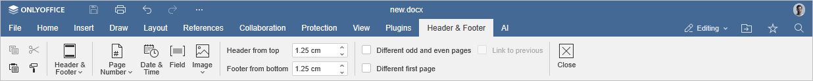
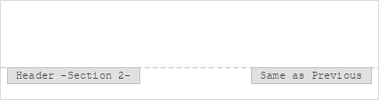

Insert page numbers
To insert page numbers in the Document Editor:
- Switch to the Insert tab of the top toolbar.
- Click the Page Number icon.
-
Choose one of the available options:
- Choose one of the positioning presets to insert a page number there.
- Click the To current position menu item to insert a page number at the current cursor position.
- Click the Number of pages menu item to insert a total number of pages in the document.
-
Click the Page Numbering menu item to open the advanced settings:
- The Continue from previous section option is selected by default and makes it possible to keep continuous page numbering after a section break.
- If you want to start page numbering with a specific number in the current section of the document, select the Start at radio button and enter the required starting value in the field on the right.
- Use the Number format dropdown menu to quickly change the format of the page numbers, e.g., "I, II, III, IV..."
To edit the page number settings:
- Double-click the page number added.
-
Change the current parameters on the Header & Footer tab on the top toolbar:

- Check the Different first page box to apply a different page number to the very first page or in case you don't want to add any number to it at all.
- Use the Different odd and even pages box to insert different page numbers for odd and even pages.
-
The Link to Previous option is available in case you've previously added sections into your document.
If not, it will be grayed out. Moreover, this option is also unavailable for the very first section (i.e. when a header or footer that belongs to the first section is selected).
By default, this box is checked, so that unified numbering is applied to all the sections. If you select a header or footer area, you will see that the area is marked with the Same as Previous label.
Uncheck the Link to Previous box to use different page numbering for each section of the document. The Same as Previous label will no longer be displayed.

To return to the document editing, double-click within the working area.